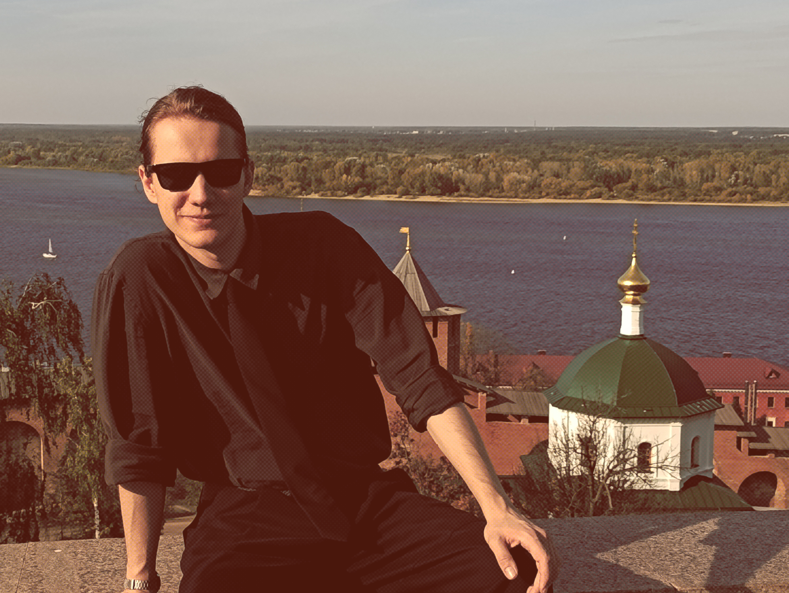
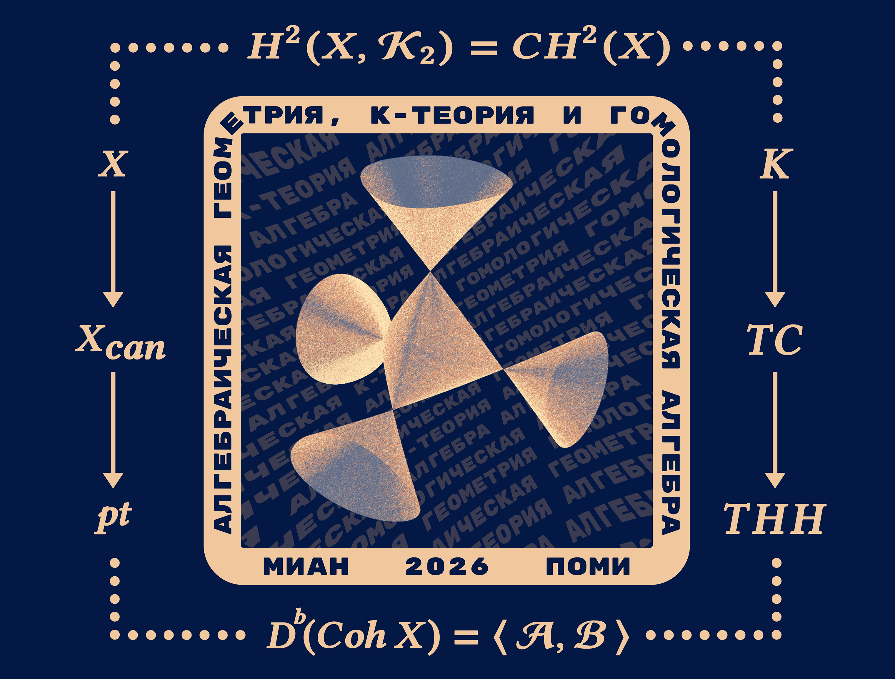
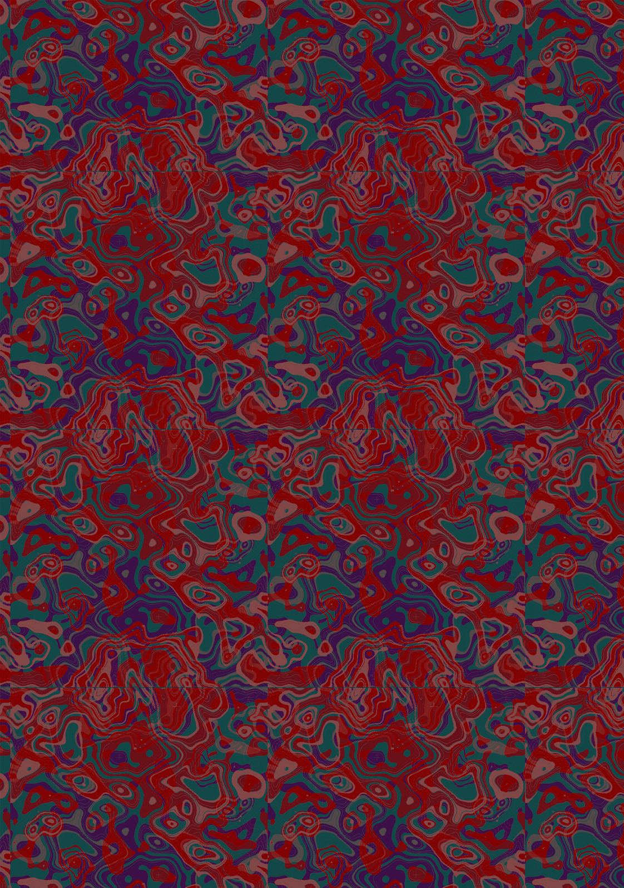
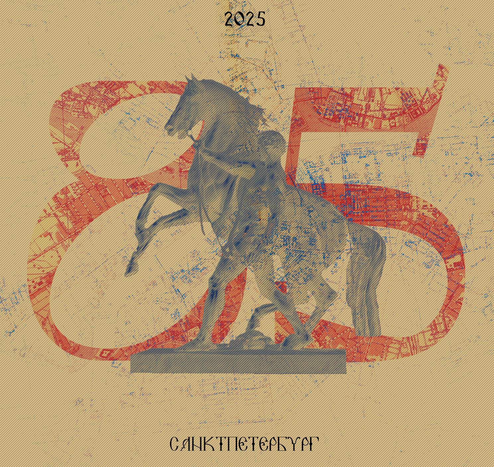
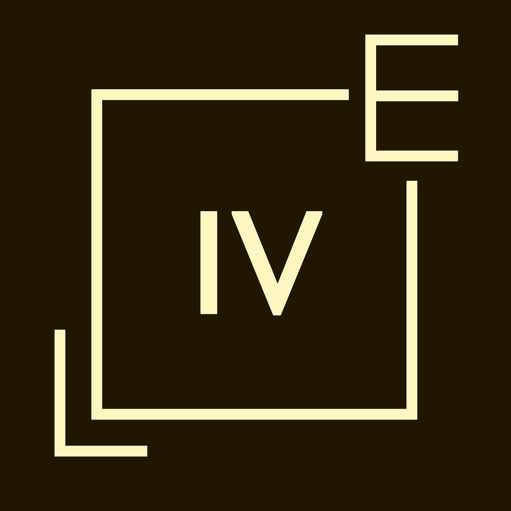
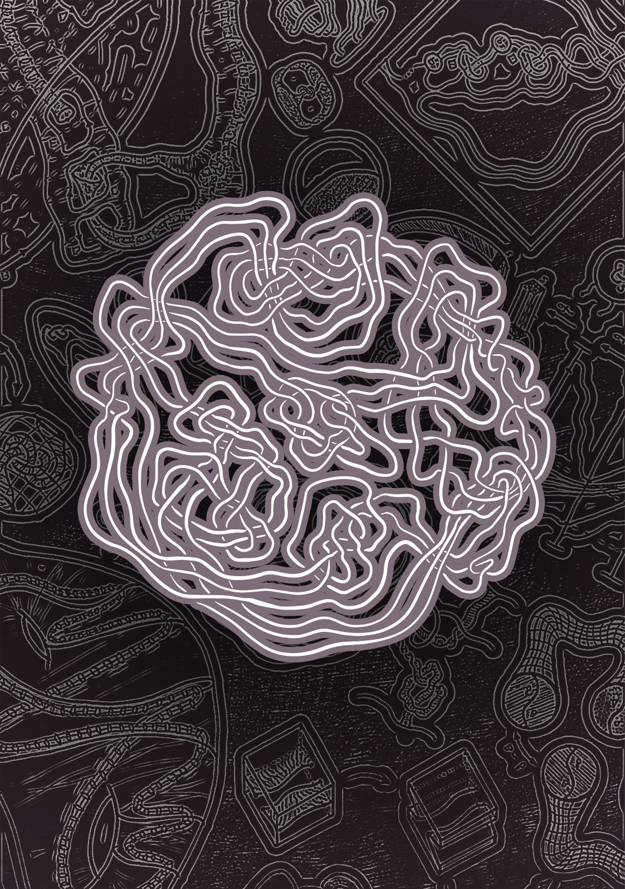
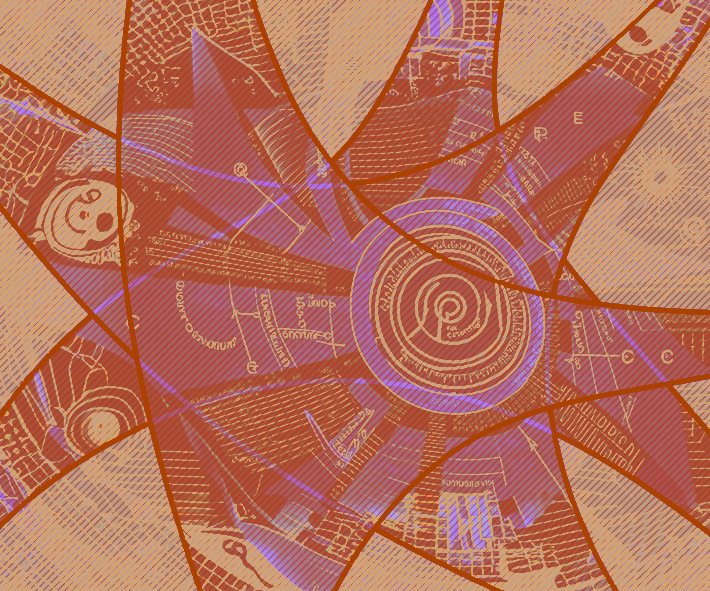

- Full Name:
- Alexey Yu. Miller
- Date of Birth:
- 17 December 1998
- Place of Birth:
- Chelyabinsk, Russian Federation
- Ethnicity:
- Wolgadeutsche
- Affiliation:
- PhD Student at the St. Petersburg Department of Steklov Mathematical Institute of Russian Academy of Sciences
- Academic Advisor:
- Andrey V. Malyutin
- Field of Research:
- Low-Dimensional Topology






Founded in 2020 at the Euler International Mathematical Institute, the Low-Dimensional Topology Student Seminar (LDTSS) provides a forum for early-career mathematicians to discuss current research and related topics.
I co-organize the seminar with Ilya Alekseev, Arshak Aivazian, Daria Aksenova, Vasily Ionin, and Simona Kurapova.
The seminar is held in Russian. During the current semester, meetings take place on Fridays at 4:00 p.m. in Room 201, 29 14th Line, Vasilyevsky Island, St. Petersburg, and are also streamed via Zoom.
International conference “Algebraic topology and group actions”. October 19–23, 2026, Steklov Mathematical Institute.
Using the Goussarov–Habiro clasper theory, we obtain a visual answer to the Hirasawa–Uchida question on the Gordian complex of knots and prove that its geometric realization is an ℝ∞-manifold.